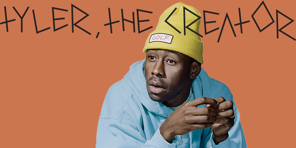
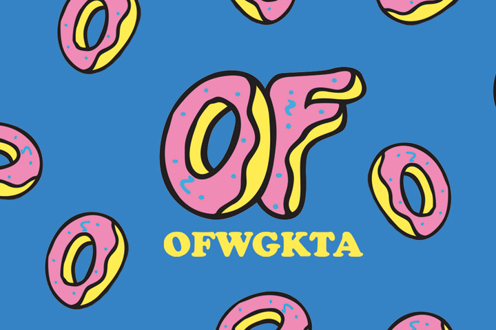
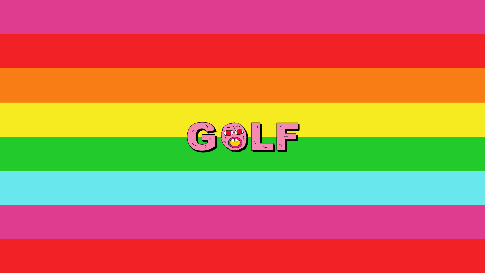
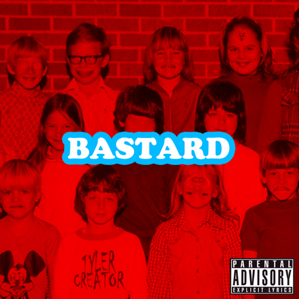
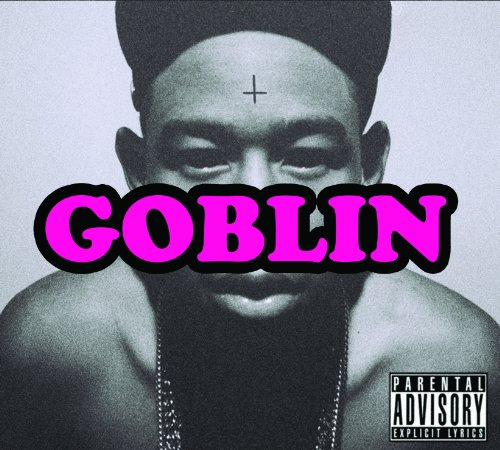
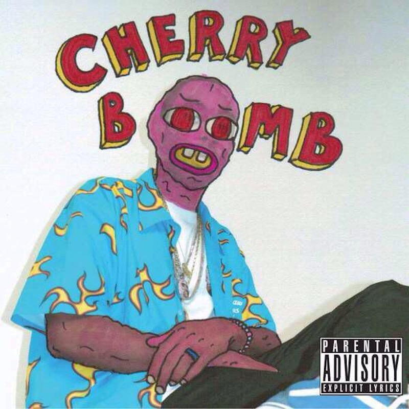
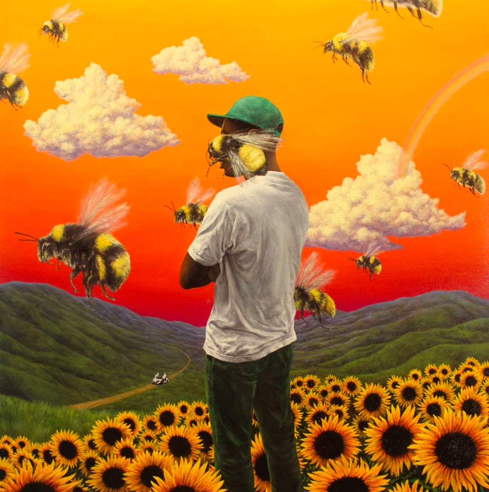

Tyler the creator
미국의 래퍼, 프로듀서, 패션 디자이너, 뮤직 비디오 감독.
LA를 기반으로 두고 활동하고 있는 크루 오드퓨처의 수장.

Odd future
오드 퓨처 (OFWGKTA, Odd Future Wolf Gang Kill Them All)은 미국의 힙합 그룹.
오드 퓨처는 래퍼 겸 프로듀서인 타일러 더 크리에이터, 래퍼 겸 싱어송라이터인 프랭크 오션,
등을 포함한 60여명으로 이루어져있다.

Golg wang
자신의 크루 이름 일부를 가져와 만든 브랜드.
평소 스케이트 보드, 그래피티 등 서브컬처를 좋아했으며 그 문화를 바탕으로 브랜드를 제작.
꾸준한 컬렉션을 공개했고 반스, 컨버스 등 자신이 평소 즐겨 신던 신발 브랜드와 다수 협업.

Music
Bastard (2009)

Gobline (2011)

Wolf (2013)

Cherry bomb (2015)

Flower Boy (2017)
